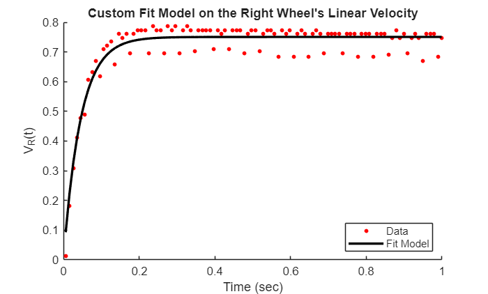
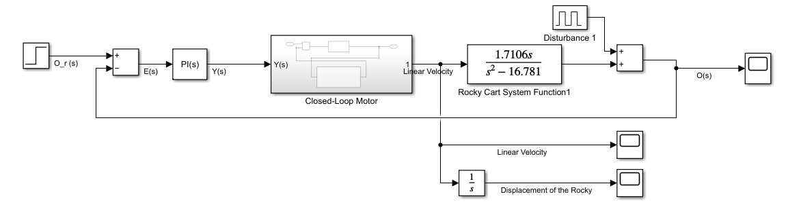
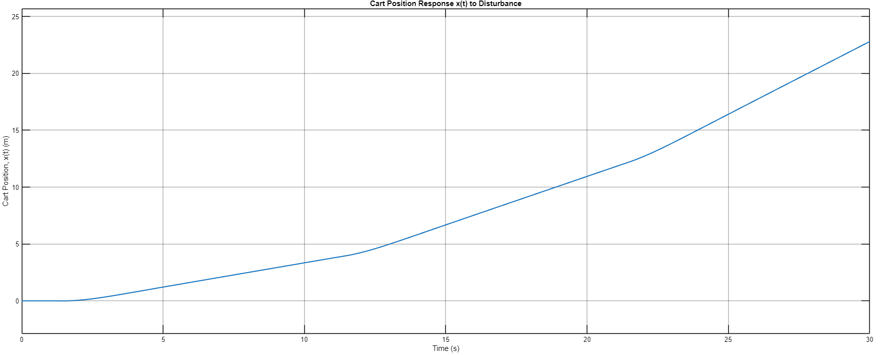
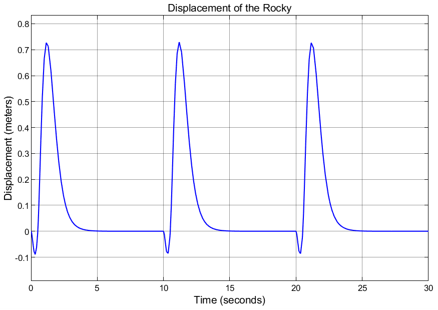

The challenge
Keep the robot upright after disturbances while bringing its wheel velocity and displacement back toward zero.
Approach
The team measured motor and pendulum dynamics, developed a PI-based balancing controller in MATLAB and Simulink, and implemented it on the Rocky robot. An initial angle-only controller exposed an important limitation: recovering upright did not prevent the wheels from drifting. A five-pole design added wheel-motion feedback to support stationary balancing.
- Collected wheel step-response and pendulum free-response data with Arduino and CoolTerm, then fitted dynamic models in MATLAB.
- Compared the initial three-pole angle controller with a five-pole controller incorporating wheel velocity, position, and integrated-position feedback.
- Implemented the controller in Arduino code, including encoder and angle measurements and motor-command limits, and compared hardware behavior with the Simulink response.




From drifting to stationary balance




Results & reflection
The five-pole simulations returned angle, velocity, and displacement toward zero after repeated disturbances. The report describes similar overall behavior on the physical robot, with noisier and less smooth settling. The linked demonstration accompanies that qualitative hardware comparison.
Balance alone is not the same as stationary balance: the wheel-motion feedback matters as much as the angle loop.